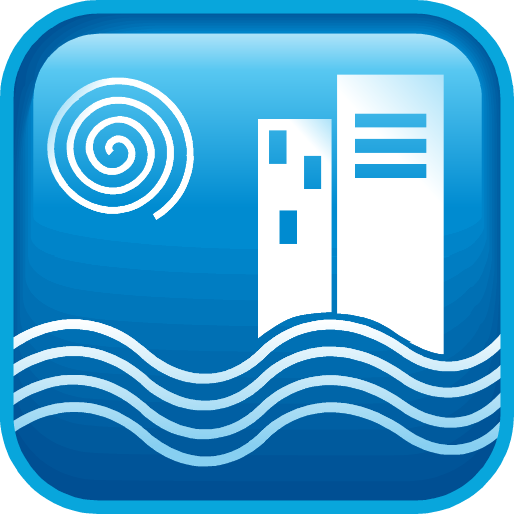

| Carreras | Imagenes | Descripcion |
|---|---|---|
| Programación | La carrera de Técnico en Programación, ofrece las Competencias Profesionales que permiten al estudiante realizar actividades dirigidas al desarrollo de software de aplicación en plataformas de escritorio, web y móviles, utilizando los paradigmas de programación estructurada, programación orientada a objetos y programación orientada a eventos, aplicando metodologías de la Ingeniería de Software. | |
| Mecatronica | La carrera de Técnico en Mecatrónica, ofrece las Competencias Profesionales que permiten al estudiante realizar tareas de diagnóstico, instalación, diseño y mantenimiento, a sistemas mecatrónicos, detectando anomalías en procesos de producción automatizados y realizar mantenimientos correctivos y preventivos en procesos integrales, verificando el funcionamiento de sensores, actuadores mecanismos y programas de cómputo, que gobiernan la producción. | |
| Producción Industrial | La carrera de Técnico en Mantenimiento Industrial, ofrece las Competencias Profesionales que permiten al estudiante realizar actividades dirigidas a realizar mantenimiento a instalaciones eléctricas, fabricar pequeñas estructuras metálicas, interpretar planos de piezas mecánicas, utilizar máquinas herramientas convencionales, manejar máquinas de soldar, mantiene equipos de refrigeración y aire acondicionado e implementara los programas de administración del mantenimiento en los sistemas. | |
| Hoteleria |  | La carrera de Técnico en Servicios de Hotelería, ofrece las Competencias Profesionales que permiten al estudiante orientar a un turista con información acerca de los sitios y actividades de interés que existen y se desarrollan en su contexto influyendo además de manera positiva en la toma de decisiones del turista en los lugares a visitar y las actividades a realizar, por 10 que sin ser un vendedor, desarrollará algunas de esas habilidades de manera implícita. |